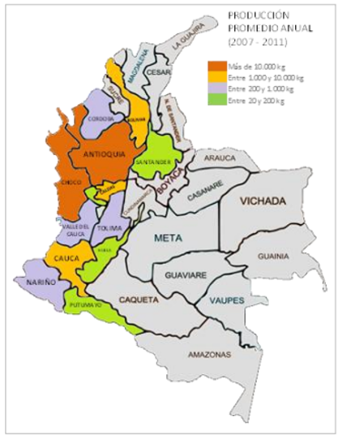
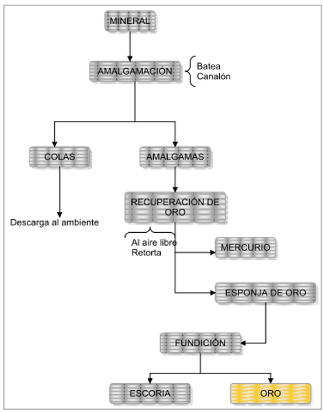
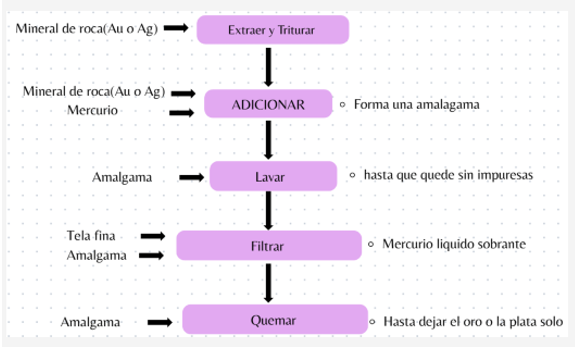
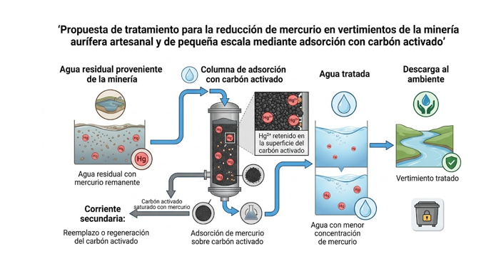
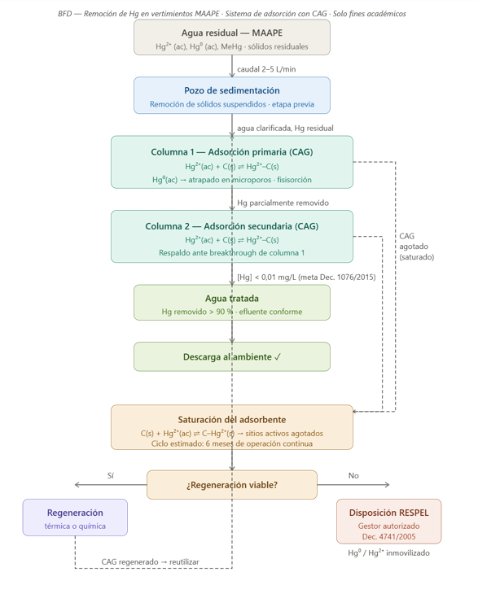

Contexto de la minería aurífera en Colombia
- ¿Qué es la minería aurífera artesanal y de pequeña escala (MAAPE)?
La minería aurífera artesanal y de pequeña escala (MAAPE) corresponde a las actividades de extracción y beneficio de oro realizadas mediante métodos de baja tecnificación, con una importante participación de trabajo manual y el uso de equipos sencillos...
En Colombia, la MAAPE tiene una gran importancia económica y social... Según la Sinopsis Nacional de la MAAPE, los principales departamentos productores concentran cerca del 99,6 % de la producción nacional.

Figura 1 – Localización geográfica de la MAAPE en Colombia - ¿Por qué se utiliza mercurio?
En la minería aurífera artesanal y de pequeña escala, el mercurio ha sido utilizado debido a su capacidad para formar amalgamas con el oro... Parte de este puede perderse durante el lavado y manipulación de la amalgama, incorporándose a los residuos.

Ilustración 1: Esquema básico del beneficio de oro 
Ilustración 2: Esquema básico del proceso de amalgama
Propuesta para la reducción de mercurio en los vertimientos
¿Cuáles son las mejores tecnologías de tratamiento de agua para eliminar el mercurio?
| Tecnología | Ventajas | Desventajas |
|---|---|---|
| Precipitación química | Bajo costo, operación sencilla, remoción de grandes cantidades. | Genera lodos contaminados, requiere etapas adicionales. |
| Adsorción (Carbón activado) | Alta selectividad, sin lodos, fácil operación. | Saturación, requiere reemplazo periódico. |
| Tratamiento biológico | Económico, menor uso de químicos. | Sensible a cambios de pH y temperatura. |
Resumen de la propuesta
Se seleccionó la adsorción con carbón activado debido a su alta eficiencia. El sistema consiste en columnas de adsorción rellenas con carbón activado granular. Para aumentar la seguridad, se proponen dos columnas en serie: la primera realiza la remoción principal y la segunda funciona como respaldo para garantizar el cumplimiento del límite de 0,01 mg/L.


Marco Normativo
La propuesta se fundamenta en la Ley 1658 de 2013, la Resolución 631 de 2015, el Decreto 1076 de 2015, la Ley 1892 de 2018 (Convenio de Minamata) y el Decreto 4741 de 2005 sobre residuos peligrosos (RESPEL).
Materiales seleccionados
Se utiliza PVC Schedule 80, carbón activado granular de coco, grava de soporte, mallas de acero inoxidable SS316 y válvulas de bola en PVC para mantenimiento.